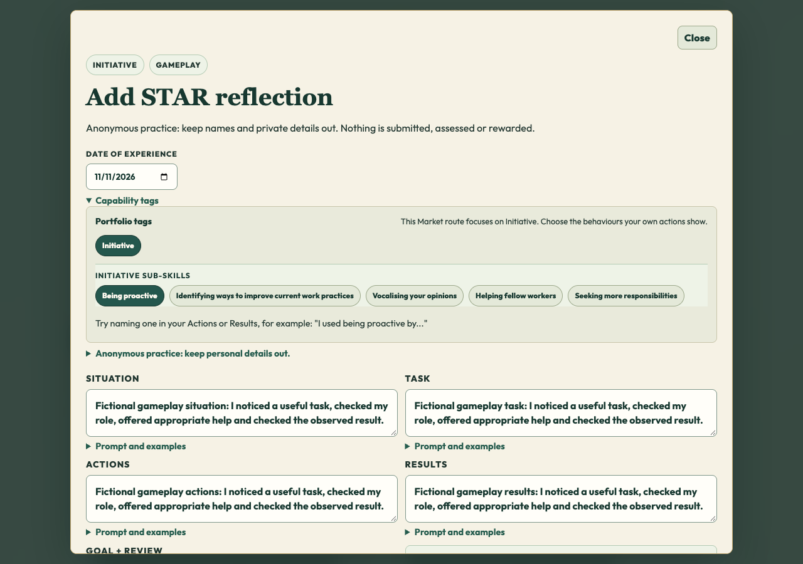
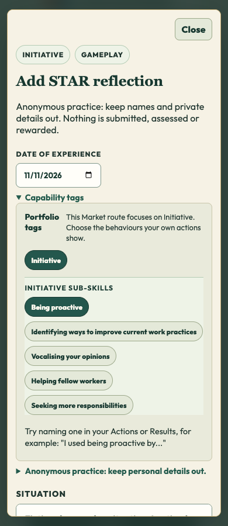

# Portfolio shared form and experience alignment —13November2026
## Exact qualified behavior
The public Market path retains its illustrated overview and explicit Start entry, then uses the same five-field all-in-one STAR renderer as the main portfolio. Four existing experience choices keep the selected context and draft, with shared capability/context-relevant fictional models. Public entry remains Initiative-only and anonymous; log/PDF/opener and standalone normal-gated Market return are retained. No forced wizard or EST-only Initiative examples.
## Checks and limits
Actual1280/390: all4contexts,5fields together, draft Close/Continue, incomplete validation, relevant Market examples, selected context in log,1-page A4 PDF,0Storage/backend/page errors; real same-run opener and standalone gated Market returns pass.
413unit tests across90files with coverage pass.419staged asset hashes and109reachable imports pass. Required broad browser CI logged22passes/13inherited admin/legacy-wardrobe failures before disconnection terminated it without a final report; no all-CI-green claim.
Verified Chapel button and physical walk-in/ceiling/return/reentry pass1280/390 on this successor. Verified EST rear-window video atz21.935, four-part cabinet clearance, exterior mouse/touch pitch, four monitor cards/guides, immediate cinema/return and return to16,12.5 pass1280/390. Original Chapel/world/card/video sources and all4Initiative videos match0adc2f5;5Market handoff/return helpers are byte-identical. Notes/Archon/backend/shared learning bank and separately staged CIf156c32 are not edited.
## Privacy and learner boundaries
Anonymous Market mode keeps Initiative scope and publicInitiative=1. The dedicated portfolioDemo=1 branch runs before account access/init, suppresses account/session/backend scripts and never falls through to learner data, including with existing cookies. It loads four labelled fictional examples with varied dates and multi-capability tags; optional anonymous practice is tab memory only, reset on refresh. Both isolated routes make zero Storage API and backend calls in actual1280/390 tests. Structured identity fields are discarded; date, existing context enum, capability/subskill tags and five free-text fields are purpose-limited. Free text can contain unsolicited personal information: warnings remain; it is not automatically anonymised. Public PDF is the user-controlled native print flow. Static hosting/font requests retain their existing network metadata; no reflection is put in URLs or sent to those services.
The authenticated presentation now accepts a cached reflection only when an existing fetched employability-star review matches the current learner and class plus the exact source-evidence/task binding (and review ID when present). Equal free text and partial IDs do not prove ownership. Synthetic two-learner/class tests pass. No owner fields, auth provider, role grants, server query scope, RLS, tenancy schema, new records or permissions are introduced. Unmatched local records remain untouched and are not automatically queued under the current login; review synchronization for this display is non-persistent. This is a bounded UI/cache safeguard, not verification of the existing backend or all school tenancy controls. Older/unlinked records may remain hidden pending legitimate reconciliation; no deletion or migration occurs.
DSE1/13/14 are scoped technical checks. DSE2/DAT1 are change-specific policy/ownership applicability determinations, not product-wide passes; all existing WA questions and school-readiness gaps remain UNVERIFIED. See the separate implementation/applicability records.
## Publication state
Local qualification only. Current actual live game remains0adc2f5; the planned demo URL is not a deployment proof. Publish exact source review, obtain genuine unchanged-version receipts and normal guarded push; independently verify actual live demo/forms/Market/Careers/Core/Chapel/EST and every manifest asset. Then update actual root reader descriptions/screenshots and live closeout. Tania/Safari/physical-device/classroom acceptance remain separate.
## Exact source versions
- `dashboards/dashboard.js` — `100644:9bbc8b388b3a77a6e458219e80eb1b45d21b20c8`
- `dashboards/initiative-portfolio.css` — `100644:44588ee6cb83b0b2b822c8804b95e4d2bc7a5435`
- `dashboards/student.html` — `100644:ba31d9faec94ad744d769cdf5f30f2070f37559e`
- `modules/initiative/parallel/learning/portfolio/initiative-portfolio.mjs` — `100644:49754d74037183f84d6bf89d8c6680fa5cedb8c1`
- `playable-3d/release-manifest.json` — `100644:f052fb995e2a48f2cfb8060fef7abdc9cc0a1127`
- `tests/unit/public-portfolio-alignment.test.mjs` — `100644:e142181347b2ed5891d29fefa7cccca51823d1c1`

Actual exact qualified candidate; game publication and Tania acceptance remain separate.
Actual exact qualified candidate; game publication and Tania acceptance remain separate.